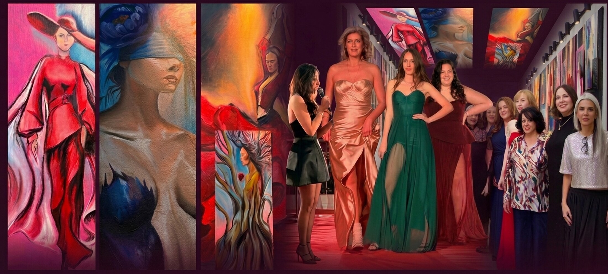
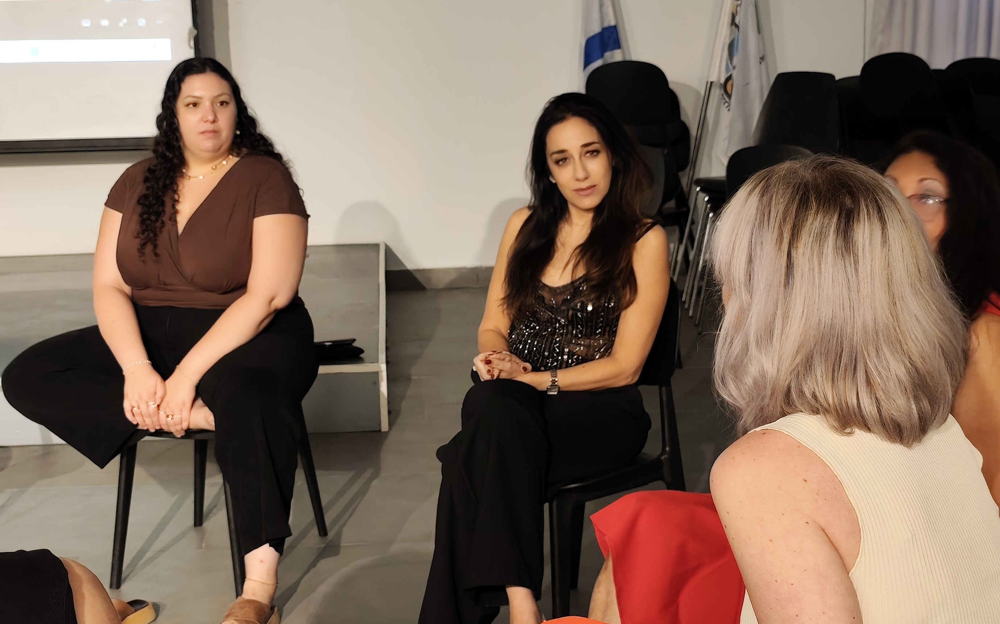
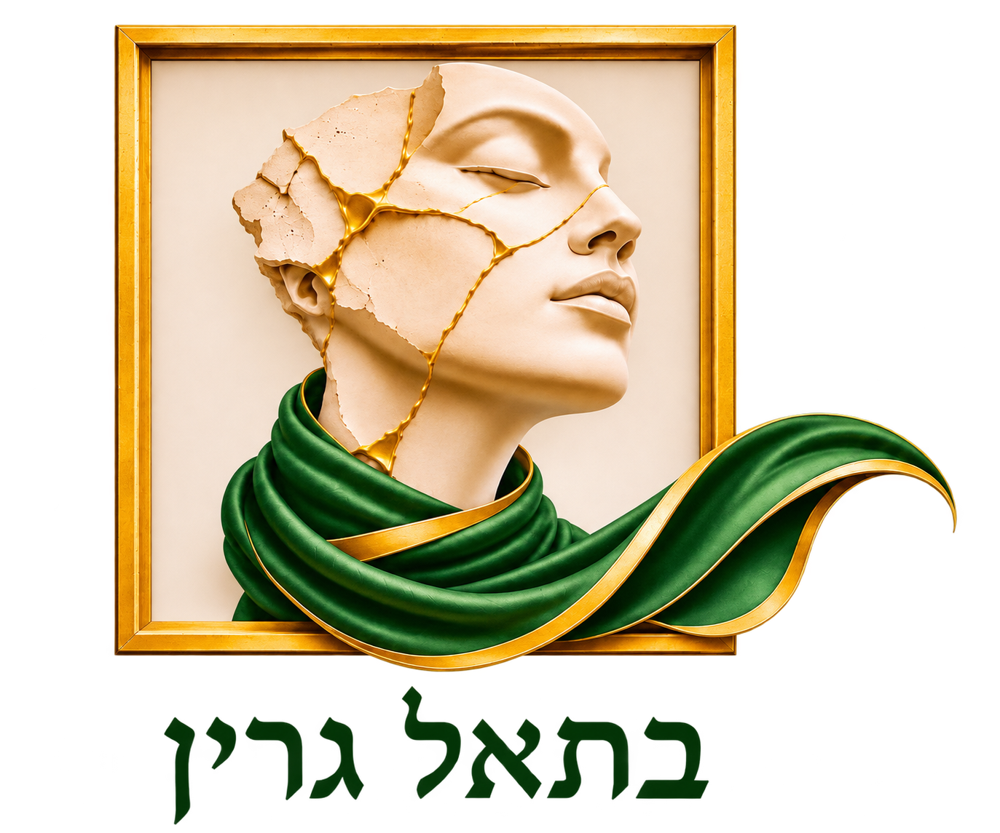
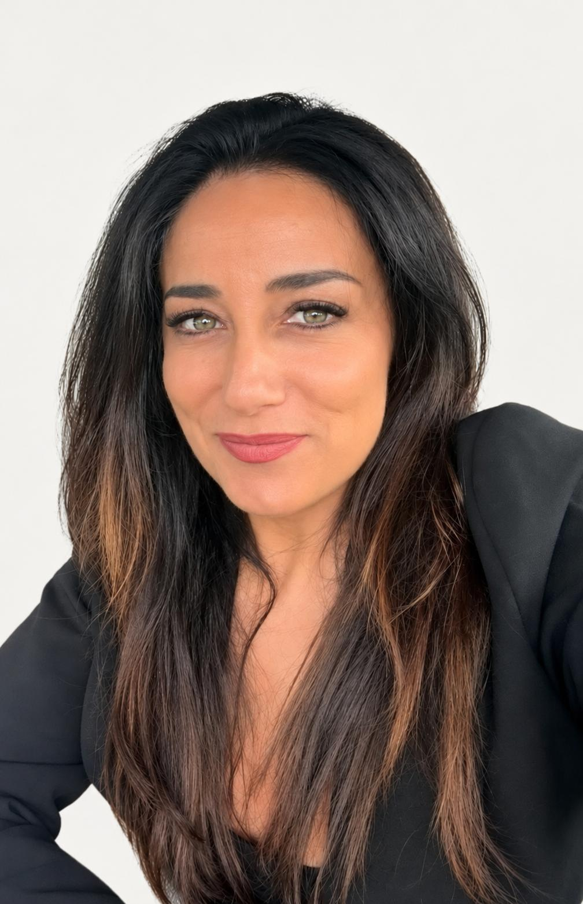

נפגשות
מכירות, משתפות ובונות אמון. יוצרות מרחב שבו אפשר להיות בדיוק מי שאנחנו, בלי מסכות ובלי שיפוטיות.

נשים. אומץ. התחלה חדשה.
בין ארון הבגדים לארון הנפש.
לפעמים החיים מורידים אותנו מהמסלול. אני מזמינה נשים לעלות עליו מחדש.
לא כדי להציג בגדים. אלא כדי להפסיק להסתיר את עצמן.
01 / הסיפור שלנו
מה באמת קורה לפני שאישה מעזה לעלות על המסלול ולהיראות?
הרבה לפני שאורות הבמה נדלקים, מתחיל המסע האמיתי. מסע של גילוי, בחירה ואומץ לתפוס מקום. לא רק על המסלול. בחיים.
מכירות, משתפות ובונות אמון. יוצרות מרחב שבו אפשר להיות בדיוק מי שאנחנו, בלי מסכות ובלי שיפוטיות.
דרך אופנה, יצירה והתנסות, מגלות כוחות, בוחרות מחדש ומתרגלות את החופש להיות מי שאנחנו. בלי להתנצל. בלי להצטמצם.
עולות על המסלול ביצירות של מעצבות ומעצבים מקומיים. פוגשות את הקהל, את אור הזרקורים ובעיקר את עצמנו. לא כדי להפוך למישהי אחרת, אלא כדי להעז להיראות כפי שאנחנו.

02 / הדרך לבמה
התהליך חשוב לא פחות מרגע השיא.
בכל שלב נבנים קשר, ביטחון ומקום לעצמך.

מכירות, משתפות ויוצרות קשרים במרחב שמאפשר לכל אחת להיות היא עצמה.
חזרות, שיחות ובחירת בגדים — עם ליווי, הקשבה ועידוד הדדי.
לובשות יצירות של מעצבות ומעצבים מקומיים, ופוגשות קהל שבא לראות, להתרגש ולתמוך.


לאתר של בתאל גרין ↗האישה שמאחורי הרעיון
מנחת קבוצות, מרצה באקדמיה ומלווה תהליכי שינוי, מחברת בין עולמות הנפש, האופנה והזהות האישית.
״במשך שנים של עבודה עם אנשים המתמודדים עם אתגרים נפשיים, נחשפתי שוב ושוב לפער שבין האופן שבו החברה רואה אדם לבין מי שהוא באמת.
מתוך המפגש הזה, והאהבה שלי ליצירה ולאופנה, נולד קינטסוגי סטייל - מיזם שמחבר בין אופנה לנפש, בין ביטוי אישי לשייכות, ובין הסדקים שאנחנו נושאות לזהב הטמון בהם.״
״מעולם לא רציתי רק שנשים יעלו על המסלול. רציתי שיגלו כמה רחוק הן יכולות ללכת גם אחריו.״
קינטסוגי (金継ぎ — "תיקון בזהב" או "חיבור בזהב") היא אמנות יפנית מסורתית לשיקום כלי חרס וקרמיקה שבורים באמצעות לכה טבעית מעץ האורושי (Urushi), המעורבבת באבקת זהב, כסף או פלטינה.
הטכניקה צמחה ביפן בסוף המאה ה-15. על פי המסורת ההיסטורית, השוגון אשיקאגה יושימאסה שלח את קערת התה הסינית האהובה עליו לתיקון בסין. הכלי הוחזר אליו כשהוא מחובר בסיכות מתכת גסות שפגמו במראהו. האומנים היפנים חיפשו דרך מעודנת יותר: הם מילאו את הסדקים בלכה וציפו את קווי השבר בזהב, וכך הפכו את הקערה הפגומה ליצירת אמנות ייחודית.
בניגוד לגישה המקובלת, השואפת להסתיר ולטשטש כל סימן לתיקון, הקינטסוגי מדגיש במכוון את קווי השבר:
עם השנים חרג המושג מגבולות הקדרות והפך למטאפורה אוניברסלית בפסיכולוגיה, באמנות ובתהליכי שיקום.
במובן זה, הקינטסוגי מבטא קבלה של פגיעות וחוסן פנימי: משברי חיים, פצעים נפשיים ושברים אינם הופכים את האדם ל"פגום" או לחסר ערך. להפך — חוויית ההתמודדות, ההחלמה והאיחוי מעצבת את הייחודיות, העוצמה והיופי שבו, בדיוק כפי שחיבורי הזהב הופכים כלי שבור ליצירה שאין שנייה לה.
03 / רגעים שנשארים
על המסלול ובין המפגשים —
מבחר רגעים מתוך הפרויקט.
מהמפגש הראשון ועד מחיאות הכפיים
תצוגת הנפש 2026 — רגעים של יצירה, אומץ ושמחה, על במה אחת.
04 / כשהרגש פוגש צבע
לצד האופנה, המיזם נותן מקום גם לאמנות. במפגשים בהנחיית אמן, המשתתפות מוזמנות לבטא חוויות, רגשות ואתגרים באמצעות צבע וצורה.
זהו מרחב להתנסות, לשיחה ולגילוי אישי — עוד דרך לתת קול לסיפור שלהן.
עבודות המשתתפות מתוך הפרויקט. שמות היוצרות וסיפוריהן יתווספו בהמשך.05 / יחד מאפשרים לזה לקרות
הנתינה שלכם יכולה לפתוח דלת למפגש,
ליצירה ולרגע של גאווה על הבמה.
מאחורי כל תצוגה עומדים זמן, ליווי, בגדים, מקום ואנשים שאכפת להם. תמיכה במיזם מסייעת ליצור את התנאים שבהם נשים יכולות להיפגש, להתנסות ולהרגיש חלק.
לתמיכה במיזם, פנו אלינו במייל או בוואטסאפ.
תודה למי שמאפשרים את הדרך
כאן נכיר את הארגונים, המעצבים והאנשים שתומכים במיזם.
שותפות שמאפשרת למיזם לצמוח
תודה על התמיכה, על השותפות ועל הדרך המשותפת.


יחד נותנים מקום
תודה לאנשי המקצוע ולעסקים שתומכים במיזם.

עיצוב אופנה

עיצוב אופנה

עיצוב אופנה
סטיילינג

איפור
איפור
איפור
עיצוב שיער

עיצוב שיער